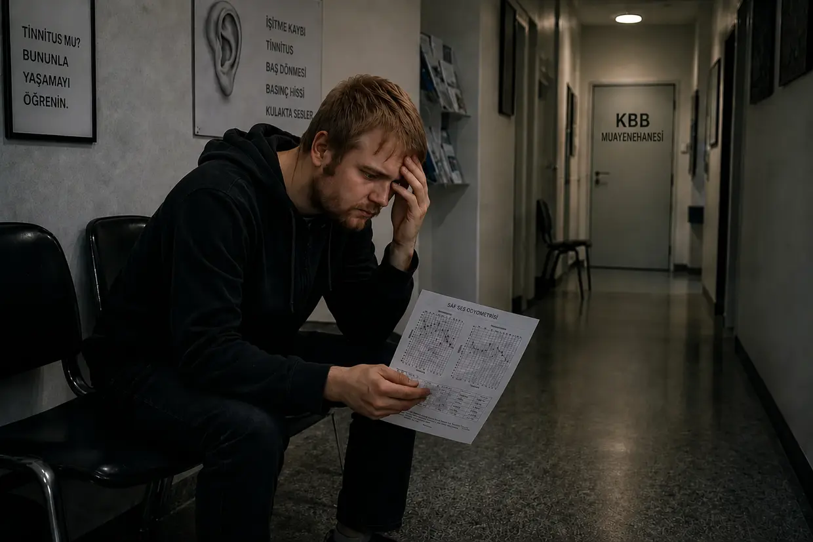
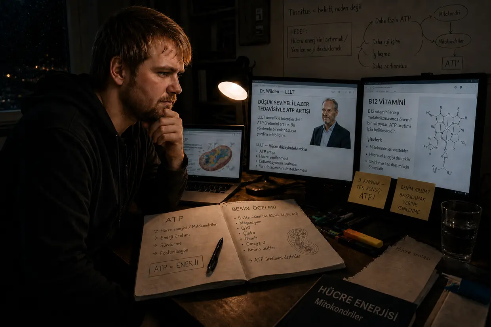

Tinnitus cehennemine yolculuğum — 1. Bölüm: Cehenneme yolculuk
Merhaba, ben Dustin Müller. Tinnitusu geçmişte — hem de birden fazla kez — bizzat yaşamış biri olarak bu sayfayı yazmaya büyük bir ihtiyaç duydum: araştırmalarım ve kendi deneyimlerimle, bu sorunu yaşayan başkalarına nasıl tamamen iyileştiğimi göstermek için. Ama kulaklarımda neler olduğunu açıklamadan önce, bütün bunların bende nasıl başladığını anlatmam gerek.
Önce şunu söyleyeyim: Bunların üzerinden artık 14 yıldan fazla zaman geçti. Sahnelerin çoğunu dün olmuş gibi hatırlıyorum — birkaç ayrıntıyı ise birbirine karıştırabilirim. Bunun anlaşılır olması gerek.
Kısa versiyonu mu arıyorsun? Bu uzun anlatı her ayrıntıya giriyor: odyogramlar, KBB ziyaretleri, tek tek atılımlar. Daha kısa olsun istiyorsan doğru adres kısa hikâye.
2011 sonbaharı: İlk disko
İnsan 23 yaşındayken enerjisi bitmek bilmiyor; bedeninin de her şeye dayanacağını sanıyor. Ben de kulaklarıma tam bu kafayla davrandım. Müziğe bayılıyordum. Yıllarca kulaklıkla müziği o kadar yüksek sesle dinledim ki annemle babam bunu kapalı kapının ardından duyabiliyordu. Ben farkında değildim ama sistemim çoktan “pelteye dönmüştü”.
Her şey kuzenimle başladı. Daha önce hiç diskoya gitmemiştim. O da bu kez Frankfurt’taki U60311’e birlikte gitmemizi önerdi — “Orası diğerleri kadar dolu olmuyor, acayip eğlenceli.” Onunla kendi aramızda eğlenmeyi zaten çok sevdiğim için kısa bir süre tereddüt ettim, sonra kabul ettim. Daha merdivenlerden inerken, salon hâlâ rahat 40 metre uzaktayken bile bas sesini şiddetle hissediyordum. Yine de: Seviniyordum. Safça, içeride en iyi boş yere geçtim — hoparlörlerin topu topu altı ila sekiz metre kadar önüne, sol kulağım tam ses kaynağına dönük. Yaklaşık dört saat. İlk tinnitusumun ortaya çıktığı nokta tam da buydu.
Ertesi sabah: Sola çekilme
Ancak merdivenlerden yukarı, çıkışa doğru giderken kulaklarımdaki basıncın ne kadar korkunç olduğunu fark ettim — solda sağdan daha fazlaydı. Her şey suyun altındaymışım gibi boğuk geliyordu, bazı sesler de hafifçe canımı yakıyordu. Epey şaşkın bir hâlde kuzenime onun da bu basıncı hissedip hissetmediğini sordum. “Evet, kötü bir şey değil, yine geçer.” Ben de üzerinde daha fazla durmadım, trenle eve döndük ve yatıp uyudum — aklımın bir köşesinde: Yarın çok daha iyi olacak.
Ertesi sabah alkolün etkisiyle gördüğüm karmakarışık bir rüyadan irkilerek uyandım — ve şiddetli denge bozukluklarıyla doğruca yastığa geri düştüm. Kendimi toparlamak için birkaç dakika yattığım yerde kaldım. İkinci denemede, bu kez çok yavaş hareket ederken, ne kadar şiddetli biçimde sola çekildiğimi fark ettim: Başımı düz tutmak zordu; dengemi kaybedip sola ve öne doğru eğilmeden ayağa kalkmak neredeyse imkânsızdı. Sonunda başardım ve kendimi bilinçli olarak dengeleyerek günü bir şekilde geçirdim. Basınç hâlâ vardı, ama artık yalnızca soldaydı ve geceye göre belirgin biçimde daha hafifti.
Bedenimin pek çok şeyin üstesinden gelebileceğine güvenen biriyim. Bu yüzden pek kaygılanmadım: Zaman nasıl olsa halleder. Öyle de görünüyordu — sola çekilme azaldı, basınç neredeyse kayboldu. Rahat bir nefes aldım.
3. gün: Ses benden geliyor
Diskodan sonraki 3. gün. Uyandım ve birden buzdolabının bip sesine benzeyen bir ses duydum. Bu da ne lan? Başımı duvara dayadım. Prizi dinledim. Bilgisayarı, çalar saati kontrol ettim. Hiçbir şey. Sonra ellerimi kulaklarımın üzerine bastırdım.
Hassiktir. Ses benden geliyor. Kafamın içinde.
Dakikalarca şok içinde öylece dikildim. Bu ne? Şimdi böyle mi kalacak? Sol kulağımda uğultu, hışırtı, siren sesleri ve yüksek bir bip sesi. O sırada sağ kulağımda da hafif bir bip sesi duyuyordum. Şoka rağmen şunu düşündüm: Nasıl olsa yine geçip gider.
14 günlük süre
Bu durumda muhtemelen herkesin yapacağı şeyi yaptım: Çocukluğumdan beri tanıdığım KBB doktorumdan randevu aldım — ve o zamana kadar interneti didik didik taradım. Neden önce bu basınç, neden baş dönmesi, neden şimdi de bir türlü susmayan bu sesler? Birkaç dakika içinde yanıtları bulmuştum: ani işitme kaybı ve iç kulak hasarı. Kalıcı işitme kayıpları, çoğu zaman kulaklarda sesler. Ve sonra damarlarımdaki kanı donduran o cümle: “Bu durum 14 gün içinde tedavi edilmeli — yoksa kronikleşir ve insan bunu ömür boyu taşır.” tinnitus.de forumunda bu şeyle beş yıldır yaşayan insanların açtığı başlıkları okudum. Beş yıl mı? Hassiktir ya.
Randevuya yalnızca birkaç gün vardı. Ben de kendime cesaret verip bekledim.
1. KBB doktoru: “O seslere kulak vermeyin”

Sonunda muayene odasına girebildiğimde gerçekten rahatladığımı hissettim: Umut, birazdan her şey iyi olacak. Diskoya gidişimi ve o zamandan beri beni nelerin rahatsız ettiğini kısaca anlattım. Dinledi, önce bir şey söylemedi, aletleriyle kulaklarıma baktı. Tekrar sordum: Şimdi ne yapmalıyım, orada tam olarak ne oldu? O, şimdiden hafifçe bezmiş bir hâlde: “Eveet, o seslere kulak vermeyin. Sesleri bastırmak için biraz müzik dinleyin.” Ben: “Ama 14 gün içinde tedavi edilmesi gerekmiyor mu? Peki kulakları daha fazla sese maruz bırakmak gerçekten mantıklı mı?” O: “Önce bir odyometri yapacağız.” Bunu deyip odadan çıktı.
Şaşkın şaşkın arkasından baktım ve başka bir doktorun belki daha fazla bilgisi olup olmadığını düşündüm. Daha bu düşünceyi bitiremeden asistan seslendi: Benimle gelin, odyometri.
Odyometri: İnsan ancak sessizlikte fark ediyor
Ses yalıtımlı kabine girince işitme hasarımın gerçekten ne kadar fena olduğunu ancak o zaman fark ettim. Oda dışarıdan tamamen yalıtılmıştı — ve bu sessizlikte kulaklarımdaki her bir sesi, akıl almaz derecede yüksek duyuyordum. Test üç bölümden oluşuyordu: önce tinnitusumun frekansını ve ses düzeyini belirlemek, sonra genel işitme yetimi, son olarak da kafatası üzerinden kemik iletimini ölçmek — bunun için kulaklık kulaklarımın altında mı üstünde mi duruyordu, orasını artık tam hatırlamıyorum. Ardından: bekleme odasına dönüş.
Hüküm: “Bununla yaşamayı öğrenin”
Kısa bir süre sonra beni yeniden içeri çağırdı; bu kez konuşmamız daha uzun sürdü. Raporu elinde tutarak, ciddi ve kararlı bir ses tonuyla bana şunu açıkladı: Diskoya giderek işitmeme hafif ama kalıcı bir hasar vermiştim ve buna karşı yapılabilecek hiçbir şey yoktu.
Bir an gerçekten dilim tutuldu. O sırada kulaklarımı bir kez daha muayene ediyordu. Hafifçe titreyerek, bunu yeniden düzeltmenin hiçbir yolu olup olmadığını sordum. Yine hafifçe bezmiş bir hâlde: “Bununla yaşamayı öğrenmeniz gerekiyor. Seslere kulak vermeyin, dikkatinizi dağıtın, kulaklık takın.” Diskolara gitmeye devam edip edemeyeceğime dair — şimdi bakınca saçma gelen — soruma: “Evet, bu bir sorun yaratmaz.” Bunun üzerine vedalaşıp odadan çıktı.
Yemin
Şaşkınlıktan ne diyeceğimi bilemez ve epey çökmüş bir hâlde, raporlar elimde, muayenehaneden çıktım. Eve dönüş yolunda aklımdan tek bir şey geçiyordu: Bütün hayatımı bununla yaşamayacağım, kesinlikle. Kendime söz verdim: Tinnitustan kurtulmak için akla gelebilecek her şeyi deneyeceğim — yoksa artık yaşamak istemiyorum. (Bunu bütün ciddiyetimle söylemekten çok, öylesine söylemiştim. Yine de: İçinde bulunduğum durum yıkıcıydı.)
Eve varınca içimde yeniden umut doğdu. Almanya’da hiçbir doktorun tinnitusun ne olduğunu ve nasıl tedavi edileceğini bilmediğine bir türlü inanamıyordum. Hemen yeniden bilgisayarın başına geçtim ve yakın bir tarihe randevu alana kadar başka KBB muayenehanelerine yazdım.
“Ya tinnitus gider ya da ben giderim. Bu şeyin hayatıma hükmetmesine izin vermeyeceğim. Ne yapılabileceğine kendim bakmam lazım.”
İnternette neler vardı

Bir sonraki randevuya kadar geçen o birkaç günde ilk kez konuyu gerçekten etraflıca araştırdım — ve tinnitusla nasıl başa çıkılacağı, yardımcı olduğu söylenen şeyler ve tinnitusun aslında ne olduğuna dair iddialar hakkında insanı bunaltan bir bilgi yığınıyla karşılaştım:
- Kortizon ve Ginkgo: İltihabı azaltıp kan dolaşımını destekleyerek işitmenin toparlanmasını sağlamak — kulağa mantıklı geliyordu.
- Çene ve ense (CMD/HWS): Kas gerginliklerinin bu seslere yol açtığı söyleniyordu. Gerçi ben de çene ve baş hareketleriyle sesi belirgin biçimde etkileyebildiğimi fark ediyordum — ama bu şeyi diskoda edinmiştim. Bir kasın onu sürdürdüğüne daha o zamanlar pek inanmıyordum.
- TRT ve maskeleme: Başka seslerle üstünü örtmek. Bunu anlayabiliyordum: Doktorun tavsiyesiyle müzik dinlemeye devam ediyordum ya, böylece sesi iyi bastırabiliyor, hatta bazen belirgin biçimde azaltabiliyordum — ama bir süre sonra hep geri geliyordu. Üstelik öncekinden daha saldırgan ve daha yüksek. Neden böyle olduğu o zamanlar benim için büyük bir muammaydı.
- Besin takviyeleri: Onlara gülüyordum. Kuzenim — tam da diskoya birlikte gittiğim kuzenim — o zamanlar A’dan Z’ye bir preparat alıyordu. Ben de annemin yanında onun arkasından konuşuyordum: İnsan buna nasıl kanar da parasını çöpe atar? Bedenin buna ihtiyacı yok, bunların hepsini besinlerden alıyoruz. Bana da teklif etmişti. Benim aklımdan tek geçen: Bana bunlarla gelme. Yıllar sonra tinnitusumdan tam da bu yolla kurtulacağım aklımın ucundan bile geçmezdi.
2. KBB doktoru: Ginkgo ve yarım bir cümle
İkinci randevunun sabahında tinnitus birden belirgin biçimde daha yüksekti — sağdaki hafif bip sesi de öyle. Nedenini açıklayamıyordum. (Daha sonra bunu sese maruz kalmama bağlayabildim: müzik ve geceleri beyaz gürültü, hepsi doktor tavsiyesiyle.) Zaten moralim bozuktu; daha da çökmüş bir hâlde yola çıktım.
Bu KBB doktoru gerçekten sıcakkanlı ve moral vericiydi. Tinnitusumun henüz oldukça yeni olduğunu, zamanla mutlaka geçeceğini söyledi. Ginkgo yazdı, kan dolaşımı için yeterince uyumamı ve hareket etmemi önerdi. Sorularımı sordum. Kulaklık? “Bunun dikkatinizi dağıtmanız açısından faydası bile var.” Diskolar? İşte buna şaşırdım: Önce birkaç hafta onlardan uzak durmam gerekiyormuş. Peki ya tinnitusun üç aydan sonra kronik sayılması? “Önce bir bakalım, önümüzdeki haftalarda nasıl olacaksınız.” Ben: “Ama o zaman gerçekten artık iyileşemez mi?” O, biraz hazırlıksız yakalanmış bir hâlde: “İnsan bunu kompanse etmeyi, yani tamamen filtreleyip duymamayı da öğrenebilir.”
İşte yine o yarım cümle.
Birçok hafta geçti
Sonraki günler ve haftalar, beklemenin, Ginkgo’nun ve doktorun tavsiyelerinin tinnitusu azaltacağı — ya da tamamen geçireceği — umuduyla böyle geçti. Ses bir yükselip bir alçalıyordu. Gündüzleri okul sayesinde dikkatim iyice dağılıyordu. Akşamları, uyuyana kadar kulaklıkla müzik ve YouTube’dan beyaz gürültü dinleyerek üstünü örtüyordum — şelaleler, bütün akşam boyunca. Böylece bir dereceye kadar katlanılabiliyordu. Öyle sanıyordum.
İkinci ani işitme kaybı: Kafamın içinde yarım takla
Birkaç hafta sonra, bir sabah gerçeklerle yüzleşme vakti geldi. Uyandım ve sol kulağımda yine o basınç hissi vardı. Ani işitme kaybından sonra bunun herhâlde normal olduğuna, ara sıra tekrarlayabileceğine ve bir anlam taşımadığına kendimi inandırmaya çalıştım — ve okula doğru yola çıktım. Daha yoldayken başımın döndüğünü ve sola çekilmenin geri geldiğini fark ettim; şeridimde kalmak zorlaşmıştı. Aslında geri dönmek daha akıllıca olurdu. Ama dersler paralıydı ve hiçbirini kaçırmak istemiyordum.
Üstelik arabanın radyosu açıktı. Hem de gerçekten yüksek sesle. En sevdiğim şarkılar çalıyordu, kendimi tamamen müziğe kaptırmıştım, basın arabada titreştiğini hissediyordum — yan arabadakiler dönüp bakıyordu. Şu boktan tinnitus bir yana, harika hissediyordum. Geriye dönüp bakınca, neredeyse bir diskonun dörtte üçü kadardı.
İlk derste başladı: Sesleri çarpık duyuyordum ve normal sesler birden canımı yakıyordu — hiperakuzi. Dersi takip etmeye ve bütün bunları görmezden gelmeye çalıştım. Pek de başaramadım; önde söylenenleri zar zor anlıyordum. Sonraki saatler boyunca sol kulağımdaki basınç gittikçe arttı. Huzursuzdum ama belli etmeden oturup dayandım — ta ki birden görüşüm dikey olarak dönmeye başlayana kadar. Kafamın içinde yarım takla gibi.
Bu yalnızca birkaç saniye sürdü. Sonra görüntü normale döndü, ama geriye sallanma hissi veren şiddetli bir baş dönmesi, o eski sola çekilme ve soldaki boğuk işitme kaldı. Panik içinde, o anda içimde neler olduğunu anlamlandırmaya çalışıyordum — ve her şeyden önce etrafımdakilerin bunu fark etmemesini sağlamaya çalışıyordum. Utandığım için. Hemen çıkmak, eve gitmek istiyordum ama kesinlikle dikkat de çekmek istemiyordum. O yüzden oturmaya devam ettim. Çok şükür teneffüse fazla kalmamıştı. Zil çalınca çantamı kaptığım gibi sıvıştım.
Eve dönüşte araba kullanmam düpedüz sorumsuzluktu: Baş dönmesi yüzünden birkaç saniyede bir direksiyonu düzeltmek zorundaydım. Ama tek istediğim eve gitmekti, üstelik yol kısaydı. Geriye dönüp bakınca, bu yaşadığım en stresli durumlardan biriydi — bedenim tamamen kontrolden çıkmıştı, bir de birinin paniğimi fark etmesi korkusu vardı.
3. KBB doktoru: “Yeniden ani işitme kaybı” — ve bir teklif
Eve varır varmaz, bu kez hiç tereddüt etmeden, daha aynı gün randevu aldım — 3. KBB doktoru, çok yakın bir tarihe. Derste neler olduğunu anlattım. Dinledi ama hemen bir hüküm vermek yerine beni işitme testine, bir de — burnumun tıkalı olduğundan söz ettiğim için — koku testine gönderdi. Ardından “iyi huylu pozisyonel vertigo” testi: başı belirli pozisyonlara getirmek. Bu, kesinlikle hiçbir şeyi değiştirmedi. Odadan çıktı ve kadın bir meslektaşının birazdan beni tekrar çağıracağını söyledi.
Kadın doktor kaygılı ama umutlu bir ses tonuyla yeniden ani işitme kaybı yaşadığımı söyledi — bunun önümüzdeki 14 gün içinde büyük olasılıkla düzeleceğini belirtti. Koku testi, ortalama bir insandan daha kötü koku aldığımı gösterdiği için tinnitusumun tıkalı sinüslerden de kaynaklanabileceğini söyledi. Yeniden ani işitme kaybı yaşamam beni şoke etti; geri kalanlar ise neredeyse yeniden moralimi düzeltti. Ta ki hiç beklemediğim bir anda şunu ekleyene kadar: “Biliyor musunuz, böyle durumlarda birçok insan depresyona giriyor. Şikâyetleriniz devam ederse size memnuniyetle antidepresan yazabilirim.”
Orada oturmuş, doğru duyduğuma inanamıyordum. Dengem çökmüştü — ve çözüm psikiyatrik ilaçlar mı olacaktı? Muayenehaneden çıkarken aklımda tek bir şey vardı: Lütfen Tanrım, şu belirtilerin hepsi bu 14 gün içinde geçsin. Böyle yaşamak istemiyordum; psikiyatrik ilaçları ise kesinlikle istemiyordum.
4. KBB doktoru: Uzman ve psikolojik mesele
Evde başka ne yapabileceğimi düşünüp durdum — o sırada internette okuduğum kortizon tedavisi yeniden aklıma geldi. Şimdiye kadar hiçbir doktor ondan söz bile etmemişti. Bu kez özellikle ani işitme kaybı ve tinnitus konusunda uzmanlaşmış bir KBB doktoru aradım. Randevu bir türlü gelmek bilmedi.
Sallanma hissi veren baş dönmesi, denge bozuklukları, sesleri çarpık duyma, aşırı hassasiyet, kulaktaki basınç ve tabii tinnitus değişmediği için okula ara verdim. Günün büyük bir kısmını da tinnitus.de forumunda geçirdim. Orada çok sayıda insanın tinnitusunun tıpkı benimki gibi başladığını fark ettim — disko, yüksek sesli müzik, ani yüksek ses travması. Başkalarının daha önce neler denediğini de okudum: hiperbarik oksijen tedavisi (forumdaki değerlendirmeler daha çok olumsuzdu — hemen yeniden göz ardı ettim), TRT cihazları (söylendiğine göre yalnızca kısa vadede işe yarıyor, uzun vadede çoğu zaman durumu daha kötü yapıyordu; üstelik sağlık sigortası karşılamıyordu — listemden sildim), hatta implantlı ameliyatlar (benim için ancak en son çare — listenin en sonlarına attım). Kortizon tedavisi hakkında hep aynı şey söyleniyordu: İşe yaramıyor. Bunu not ettim. Ama o zamanlar doktorlara hâlâ çok güçlü bir inancım vardı ve çok övülen bir seçeneği denememiş olmanın pişmanlığını ömür boyu yaşamak istemiyordum.
Sonra randevu geldi. 4. KBB doktoru. Her şeye rağmen yine büyük bir umudum vardı: bir uzman, üstelik kortizon tedavisi seçeneği hâlâ açıktı. Önce odyometri istedi — zaten iki kez yaptırdığımı söyleyince sağlık sigortası nedeniyle bundan vazgeçti. Ben de anlattım. Diskoyu, diğer KBB doktorlarını, okulu, taklayı, her şeyi; uzun, tekdüze bir anlatımla. Sözümü kesmeden dinledi. Sonra, bunların herhangi birine değinmek yerine: “Bilişsel davranışçı terapiyi hiç duydunuz mu?”
Ben: “Hayır, pek sayılmaz. Ne demek bu?”
O: “Sorununuz esas olarak işitme sorunlarınıza fazla odaklanmanız. Böylece tinnitusu sürdürüp güçlendiriyorsunuz.”
Ben: “Aa, ilginçmiş… Ha, demek bu yüzden sürekli insanın dikkatini dağıtması gerektiğini söylüyorlar.”
O: “En yeni araştırmalara göre kronik tinnitus, esas olarak beynin bu seslere aşırı odaklanmasıdır.”
Ben: “Ama bu ses diskoya gitmem yüzünden, ani işitme kaybından, hasardan kaynaklandı…”
Kortizon soruma yanıtı şuydu: Bu yalnızca ilk 14 gün içinde anlamlıymış. Benim durumumda bir fantom sesten yola çıkmak gerekiyormuş — beyin kaybolan frekansları telafi etmeye çalışıyor ve kendisi bir ses üretiyormuş; ben buna ne kadar çok odaklanırsam ses o kadar yüksek ve kalıcı hâle geliyormuş. Sonra TRT’den söz etti, çok umut vericiymiş. Başka seslerle üstünü örtmeyi çoktan denediğimi ve bunun tinnitusumu uzun vadede yalnızca daha kötü yaptığını söyledim. Ayağa kalktı: Bunun için özel cihazları kullanmam, hem de uzun süre kullanmam gerekiyormuş. El sıkışma, vedalaşma.
Forumdaki paylaşım: Bir lazer, Regensburg’da bir doktor — ve listem
Bu kez gerçekten çaresizdim. Benim gözümde en umut verici seçenek olan kortizon tedavisi artık masadan kalkmıştı — ve bir “tinnitus uzmanı” az önce bana bu sesleri kafamın kendisinin ürettiğini açıklamıştı. Tek teselli: Üç ay henüz dolmamıştı. Bir de forum vardı. Orada günler geçirdim. Haftalar.
Bir ara “Deneyim paylaşımları” bölümünün en gerilerdeki sayfalarında “Size gerçekten ne yardımcı oldu?” başlıklı bir konuya rastladım. İlk paylaşım, kendisine “Tinnitus-Patient” diyen bir kullanıcıdandı. Ona yalnızca tek bir şey yardımcı olmuş: düşük düzey lazer tedavisi denen bir yöntem. Bununla tinnitusu ve diğer bütün kulak sorunları tamamen iyileşmiş. Diğer her şey — benim de zaten denemiş olduğum şeylerin aynısı — onda hiçbir işe yaramamış.
Bu paylaşım o zaman beni fena çarptı. Doktorlar, klinikler, çalışmalar, kabul görmüş bir iyileştirme yöntemi olan tinnitus hastaları bulmak için sanki internetin yarısını taramıştım — derken biri çıkıp tuhaf bir lazer tedavisiyle iyileştiğini yazıyordu. Anında umut, rahatlama, sevinç. Hemen arkasından da büyük bir kuşku: Altındaki yorumlarda yöntemi yerden yere vuruyorlardı. İki arada kalmıştım. Sonunda tutunacak bir dal bulmak ne güzel olurdu.
Google’da “Low Level Laser Therapie Tinnitus”, “LLLT” diye arattım. TRT’de ve diğer her şeyde olduğu gibi, çoğunlukla kötü şeyler buldum: tehlikeli, şarlatanlık. Bunu bir klinik ya da “normal” bir doktor sunmuyordu; yalnızca Regensburg’da Dr. Wilden diye biri sunuyordu. Özel muayenehane, sağlık sigortası karşılamıyor, söylendiğine göre pahalı. Böylece — içim burkularak — bu tedaviyi de listemden sildim.
Şimdilik.
En dip nokta: Kendi doğum günüm
Günler geçti, kulaklarım daha da kötüleşti. Öyle kötüleşti ki kendi doğum günü kutlamamı — ilk ani işitme kaybından yaklaşık bir buçuk ay sonra — yarıda kesmek zorunda kaldım. Hiperakuzi ve sesleri çarpık duymak beni delirtiyordu; çoğu zaman arkadaşlarımın ve akrabalarımın söylediklerini artık anlayamıyordum: Tinnitus konuşmaları bastırıyordu ve bazı harfler birden eskisinden farklı geliyordu — “S” sesi “F” gibi, “T” sesi “D” gibi. Daha fazla dayanamadım ve eve döndüm.
Baş dönmesi de gittikçe kötüleşti; zaman zaman dengemi kaybedip devrilecek gibi oluyordum. (Daha sonra anlaşıldı: Ménière hastalığı.)
İşte öylece oturuyordum. Artık okul yok, ilerleme yok. Yalnız, dışarıya kapalı — gürültüden, arkadaşlardan, hayattan uzak. Doktorlar tarafından terk edilmiş; bir de kafamın saçmaladığı, antidepresana ihtiyacım olduğu onlar tarafından kafama kazınmıştı.
Ancak sonraki günlerde gerçekten kilit bir deneyim daha yaşadım.
İlk kilit deneyim: Üniversite hastanesindeki aspiratör
Sanki başıma gelenler yetmiyormuş gibi, üstüne bir de ağır bir kulak yolu iltihabı eklendi. Şunu da söylemem gerek: Çocukluğumdan beri, özellikle kulak yollarımda atopik dermatit ve sedef hastalığım var — yıpranmış cilt, havuz suyu ve kaşıntı için kullandığım pamuklu çubuklar yüzünden kulaklarımda sürekli enfeksiyon oluyordu. Tam da bir hafta sonu, gece geç saatte. Geriye dönüp bakınca, bu gerçekten büyük bir şanstı.
Ağrı içinde kendimi Frankfurt Üniversite Hastanesinin acil servisine sürükledim. Hastanenin de iyi bir itibarı olduğu için fırsatı değerlendirip doktora tinnitus hikâyemi anlattım. Dinledi, ama önce iltihaba odaklandı — kulaklarımı muayene etti ve minicik bir aspiratörle kulak yollarını vakumla temizlemeye başladı.
Ve tam o anda oldu. Saniyeler içinde, sol kulağımdaki tinnitusun doğrudan kulak yolunda kopan bu gürültüye saldırgan biçimde tepki verdiğini hissettim. Ardından sağ kulakta: tıpatıp aynısı. O hâlde bütün bunların kafamın içinde olup bittiği tezi doğru olamazdı. Kaynak hâlâ orada, kulağın içindeydi.
Daha o sandalyede otururken, tam o dakika kararımı verdim: İşitmemin yüksek sese neden bu kadar sert tepki verdiğini — ve daha da önemlisi, uzun süre boyunca kararlı biçimde gürültüden uzak durunca ne olduğunu — öğrenecektim.
Üniversite hastanesi: Kortizon, dizüstü bilgisayar, gazlı bezler
İşi bitince, ani işitme kaybının üzerinden ne kadar zaman geçtiğini sordu. Yaklaşık iki ay. Kortizonun normalde yalnızca akut ani işitme kaybında verildiğini söyledi — ama benimkinin üzerinden henüz üç ay geçmediği için denemeye değermiş. Hemen kabul ettim. Meslektaşlarıyla kısaca görüştü (sonuçta gecenin bir yarısı, habersizce çıkıp gelmiştim), ardından hepsi kabul etti. Annemle babam bana çamaşırlarımı ve dizüstü bilgisayarımı getirdi; geceyi hastanede geçirdim.
Az bir uykunun ardından sabah oldu — ve uyanır uyanmaz tinnitusun bir kez daha belirgin biçimde kötüleştiğini fark ettim. Hem çaresiz hem de heyecanlı bir hâlde kendime şöyle dedim: Gürültüyle kötüleşme arasındaki bağlantı mutlaka doğru olmalı. Sonra KBB servisine çağrıldım. KBB doktoru, 6 numara. Önce bir odyometri — ve gerçekten de bütün değerler gözle görülür biçimde kötüleşmişti: Tinnitus daha yüksek sesliydi, işitme kaybı daha büyüktü, konuşmayı anlama testi de buna uygun biçimde kötü çıktı.
Bu doktora da ne yapabileceğimi sordum. Tepki vermedi. Üsteledim — tinnitus geçmezse hayatıma son vereceğimi açık açık söyledim. (Dediğim gibi: Daha çok öylesine söylenmiş bir sözdü. Bana yardım etmek için ellerinden gelen her şeyi yapsınlar diye doktorları baskı altına almak istiyordum.) O: “Aman, öyle şeyler söylemeyin, bunu kontrol altına alırız. Şimdi önce infüzyonlarınızı alacaksınız.”
Odaya dönünce, içim içime sığmaz hâlde hemen dizüstü bilgisayarın başına geçtim. Gürültüyle kötüleşme arasındaki meselenin ne olduğunu çözmeliydim — kronik tinnitusun tamamen psikolojik bir mesele olduğu söylenmiyor muydu? Google’da “Gürültüyle kötüleşen tinnitus” gibi bir şey arattım — ve kendimi yine forumdaki o “tinnitus hastasının” sayfasında buldum, bu kez onun kendi internet sitesindeydim. (Bir de kendine ait bir internet sitesinin olması o zaman beni gerçekten etkilemişti.) Orada, daha fazla gürültünün tinnitusu ve diğer bütün işitme sorunlarını kötüleştirdiği ayrıntılı olarak yazıyordu. Bir de Dr. Wilden’a bağlantı vardı. Tıkladım.
Bu site gözlerimi açtı. Orada yazanlar, daha demin kulaklarım vakumla temizlenirken yaşadıklarımla tam olarak örtüşüyordu. Siteyi baştan sona tekrar tekrar okudum ve giderek daha da emin oldum: Bu lazer tedavisi ve Wilden’ın söyledikleri mutlaka doğru olmalı. Umudum yine zirvedeydi. Yalnız bir sorun vardı: Öğrenciydim ve muhtemelen çok pahalı olan bir tedaviye verecek param yoktu. O yüzden şimdilik kortizona güvendim.
Üç gün sonra taburcu edildim. Ve şaşırtıcı biçimde, o günlerin bir noktasında tinnitus gerçekten fark edilir derecede daha sessiz ve daha az saldırgan hâle gelmişti. Sevinçten havalara uçuyordum — ama bunun tam olarak neyden kaynaklandığını anlayamamıştım.
Önce kortizona bağladım. Ama sonraki günlerde Wilden’ın sitesinde bilinçli olarak sessizlik aramanın ve en iyisi kulak tıkacı takmanın ne kadar belirleyici olduğunu yeniden okuyunca beynimde bir şimşek çaktı: Hastanedeki tedaviden beri iki kulağım da tamamen gazlı bezlerle tıkalıydı! Kulaklarım günlerce dış dünyadan — dolayısıyla her türlü gürültüden — yalıtılmıştı. İçimde nasıl bir duygu karmaşasının koptuğu tahmin edilebilir: Şaşkınlık, umut, rahatlama, korku, böyle şeyleri bilmeyen doktorlara öfke. Ama hâlâ fazlasıyla kuşkuluydum. Belki de hepsi tesadüftü. Belki kendi kendine yine kötüleşecekti. Belki de sonuçta yalnızca kortizondu.
Ama yaklaşık bir hafta sonra gazlı bezler çıkarıldığında bunu çok net fark ettim: İşitmem biraz toparlanmıştı, bütün belirtiler hafiflemişti. Bununla ne yapacağımı henüz bilmiyordum — ama artık, doktorların bütün tavsiyelerine ve internetteki genel görüşe karşı çıkarak, kulaklarımı gereksiz hiçbir gürültüye maruz bırakmıyordum. Müzik yok, kulaklık yok, elektrikli süpürgeyle temizlik yok.

Pat sesi: Tinnitus sabit bir şey değil
Birkaç gün geçti. Sonra kesin kanıt geldi — yine iltihap sayesinde. Hafif bir iltihap hâlâ kaldığı için, içinden krem çıkan küçük bir şişeyi tekrar tekrar doğrudan kulağıma tutmam gerekiyordu. Ve birden tam kulağımın içinde çok şiddetli bir pat sesi çıktı (muhtemelen şişenin ağzında küçük bir tıkaç oluşmuştu). Saniyenin küçücük bir kesri içinde tinnitusum uluyarak yükseldi — AMA çok kısa sürede “normal” düzeyine geri döndü.
O pat sesinden sonra öyle bir coşkuya kapılmıştım ki! Çünkü şunu anlamıştım: Tinnitus “sabit” bir şey değil, dinamik. Gürültüye tepki veriyor — ve insan bir adım daha ileri gidip neredeyse sessizlik içinde yaşarsa azalıyor. En azından benim durumumda, gürültüye bağlı tinnitusta, artık bunu inkâr etmek mümkün değildi.
O andan itibaren mümkün olduğunca çok zamanı sessizlik içinde geçirdim. Müzik, filmler, arkadaşlarla buluşmalar bir tür ödüle dönüştü — öncesinde kulaklarımı yeterince uzun süre dinlendirmişsem. O zaman da kulaklıksız, çok sessiz, çok kısa.
Günler, haftalar geçti. Aylar geçti.
8. ay: İyileşme %25’te durdu
Ve ne diyeyim: Tinnitus, diğer işitme sorunlarıyla birlikte gerçekten aydan aya azaldı. Geriye dönüp bakınca şöyle derdim: Diskodan yaklaşık sekiz ay sonra sesi dörtte bir azalmıştı — ve o düzeyde dengelendi.
Elbette tam sessizliği her an sürdüremiyordum. Zorunlu tek bir araba yolculuğu bile — gidiş-dönüş 200 kilometre; evet, camlar kapalı olsa bile uzun bir yolculuk kulaklar için gürültüdür — tinnitusu yeniden bir hafta önceki düzeyine sıçratıyordu. Bir hafta boşuna dinlendirmiş oluyordum. Diğer her türlü sese maruz kalmada da aynısı oluyordu (o zaman hepsini denemiştim). Akşam kısa bir süre, normalde dinlediğim sesin dörtte biriyle kulaklık kullanmayı denemek bile ilerlemenin durmasına ya da gerilemeye yol açıyordu.
Sonra öylece durdu. Ne denersem deneyeyim, yaklaşık %20–25 iyileşmede kaldı. Konuşmalardan kaçınıyor, sürekli kulak tıkacı takıyor, bütün gün odamda tek başıma oturuyordum; hatta tik tak eden duvar saatini bile dışarı çıkarmıştım. Alışverişe bile gitmiyordum artık. O haftalarda tek yaptığım okumak ve oyun oynamaktı — tabii ki sessiz. Biliyorum, bunları okuyunca bayağı paranoyakça geliyor. Ama sekiz aylık tinnitusun ve hiçbir şey yaşamadığım altı ayın ardından öyle bıkmıştım ki bunu göze aldım.
Yine de: Sabahları dikkatle dinliyordum, daha iyi kontrol edebilmek için çoğu zaman kulak tıkacıyla — ama artık hiçbir şey değişmiyordu. Sıfır.
Bir noktada, tam sessizlik içinde ve insanlardan uzak böyle bir hayata artık dayanmak mümkün değildi. Özlem ağır bastı, yeniden az çok normal yaşamaya başladım. Ve olacağı buydu: Kulak tıkaçlarına rağmen gündelik gürültü tinnitusu yeniden belirgin biçimde yükseltti — üstelik müzikten, elektrikli süpürgeyle temizlikten ve gürültülü olan her şeyden hâlâ kesinlikle uzak duruyordum. Bu beni mahvetti. Çözümü bulduğumu ve tek yapmam gerekenin yeterince uzun süre devam etmek olduğunu gerçekten sanmıştım. Bir ikilem içindeydim.
Çene, ense, atlas: Çıkmaz sokak
Bunun üzerine yeniden bilgisayarın başına geçtim ve çeneyle tinnitus arasındaki bağlantıya dair ne varsa aradım. Çok geçmeden CMD — kraniomandibular disfonksiyon — karşıma çıktı. Belirtiler tam uyuyordu: Çiğnerken çıtırtı — var. Şakak ağrıları, gerilim tipi baş ağrıları — var. Diş hekiminin bana zaten söylediği gibi diş ağrıları — var. CMD’ye sıklıkla bir boyun omurgası (HWS) sendromu da eşlik ediyormuş — ense bölgemde de sık sık şikâyetlerim oluyordu. Diş hekiminden bir ısırma plağı aldım. Bir ortopedi merkezinde, bilgisayarlı tomografi sonrasında boyun omurgası sendromu saptandı; doktor, bu düzeltilirse tinnitusun da azalacağına dair bana güvence verdi. Daha önce tinnitus yaşayan başkalarına da yardımcı olmuş muydu? Kısa ve net: “Evet.”
Gövdedeki, omuzlardaki ve özellikle ensedeki kas dengesizliklerini hedefli olarak gideren özel bir kuvvet antrenmanı (Med X) reçete etti. Öyle de yaptım. İkisini de demir gibi bir iradeyle sürdürdüm — geceleri plak, düzenli antrenman — ve bir yandan da sessizliği korudum. Antrenmana giderken bile kulak tıkacı takıyordum; arabada bunların üstüne bir de inşaat işçilerinin kullandığı koruyucu kulaklıklardan takıyordum.
Pek çok hafta geçti. Çenem ve ensem iyileşiyordu. İki aylık süre dolduğunda hevesim kursağımda kaldı: Tinnitusta kesinlikle hiçbir şey değişmemişti. Anlamıyordum — çene ve baş hareketlerine daha tiz bir hâle gelerek tepki verdiğini hâlâ fark ediyordum. Bir bağlantı olmalıydı. İşte o zaman, tutunacak bir dal daha olduğunu hatırladım: Atlas düzeltmesi. Doktorlar arkamdayken onu bir kenara bırakmıştım. Şimdi annemle babamdan para istemekten başka çarem kalmamıştı.
Biraz uğraştıktan sonra parayı buldum ve birkaç gün sonra Heilpraktiker’e yaklaşık 200 kilometrelik yolu gittim. Ve gerçekten de, önceki doktorlardan farklı olarak, hem elleriyle yoklayarak hem de yürüyüşümden ve bacak uzunluklarım arasındaki farktan atlasımın belirgin biçimde eğri durduğunu fark etti. Özel bir cihazla ense kaslarımı gevşetti, ardından hedefli el hareketleriyle atlası yeniden yerine getirdi. Yahu, ne tuhaf bir histi. İlk ne yaptığımı tahmin edebilirsin, değil mi? Aynen: Kulaklarıma dikkat kesildim. Yalnız, uzun araba yolculuğu tinnitusu zaten değiştirmişti; Heilpraktiker de işlemin etkisinin ancak zamanla ortaya çıkacağını söyledi.
Öykümü anlatırken, neredeyse bir yıldır uğraşıp durduğum gastritimden de söz ettim. Beslenmemi değiştirmemi, psilyum kabuğu, mineral kil karışımı ve probiyotik kullanmamı önerdi. Ve gerçekten de: İnatçı mide mukozası iltihabından bununla kesin olarak kurtuldum. Bu, o zaman bile beni çok etkilemişti.
Yine aylar geçti. Tinnitus bir yaşını doldurdu; atlas düzeltmesinin üzerinden iki aydan biraz fazla geçmişti — ve sonuç: Hiçbir şey. Tamam, neredeyse hiçbir şey: Ensem ve çenem neredeyse tamamen şikâyetsizdi. Ama tinnitus bunlardan etkilenmemişti. Onu hâlâ çenemle ve ensemle değiştirebiliyordum; buna rağmen bu bölgelerdeki tedavilerin hiçbiri ona bir fayda sağlamamıştı. Artık hiçbir şey anlamıyordum.
Son tutunduğum dal: Regensburg’a bir telefon
Geriye kalan son şey lazer tedavisiydi. Günlerce düşünüp taşındıktan ve Wilden’ın sitesini bir kez daha dikkatle okuduktan sonra kararımı verdim: Birkaç yüz avro da tutsa bunu denemeliyim. Aylarca dışarı çıkmadığım ve hiçbir şey satın almadığım için en azından biraz para birikmişti. Ben de aradım. Ücret konusunda henüz bir şey söylemediler — önce odyometri sonucumu e-postayla muayenehaneye göndermeliymişim. Öyle de yaptım.
E-postam, Mart 2012 (özgün metin):
Sayın Bay Wilden,
öncelikle, iç kulak hasarını açıklığa kavuşturmak için gösterdiğiniz harika çabalara çok çok teşekkür ederim; bu konuda birçok başka doktordan çok ileridesiniz!
Size yazıyorum, çünkü ekteki işitme eğrisini nasıl yorumlayacağınızı ve düşük seviyeli lazerle yenilenmenin mümkün olup olmadığını, mümkünse yaklaşık ne kadar süreceğini öğrenmek istiyorum.
Not: Harika internet siteniz dasgesundeohr.de sayesinde tinnitusumu şimdiden epey “sakinleştirebildim”.
İkinci not: Tinnitusum iki kulağımda daha hafif bir hışırtıdan ve oldukça yüksek bir bip sesinden oluşuyor — çok yüksek sesli müziğin tetiklediği iki ani işitme kaybı sonucunda bir yıldan biraz uzun süredir bunlardan muzdaribim.
Saygılarımla, Dustin Müller
Yanıt, 06.03.2012:
Sayın Bay Müller,
Sorunuz, işitme eğriniz ve www.dasgesundeohr.de ile orada gündelik ses düzeylerine karşı kendinizi aktif olarak korumaya yönelik önerilerimiz hakkındaki olumlu geri bildirimleriniz için çok teşekkür ederim.
İşitme eğriniz, yüksek frekans bölgesinde (4 KHz), her iki tarafta da, solda sağdan daha fazla olmak üzere, şikâyetleriniz için tipik bir iç kulak aşırı yüklenmesi gösteriyor. İç kulağınızdaki 4 KHz bölgesindeki aşırı yüklenme 30 dB’nin hemen üzerinde ya da tam 30 dB düzeyinde olduğundan, oradaki işitme hücreleriniz Dr. Wilden® yöntemine göre uygulanan yüksek dozlu düşük seviyeli lazer tedavisine çok iyi yanıt veren bir kalite düzeyinde bulunuyor. Yani 5–10 günlük bir tedaviden çok iyi sonuçlar bekleyebilirsiniz.
Bu konuda beni telefonla da arayabilirsiniz.
Saygılarımla
Dr. med. Lutz Wilden
İç kulak rahatsızlığı olan tüm hastaların kendilerini gündelik ses düzeylerinden korumaları önemlidir.
Böylece kararım kesinleşti. Bir kez daha aradım ve bu kez gerçekten Dr. Wilden’ın kendisiyle konuştum. Tam olarak ne dediğini artık hatırlamıyorum — yalnızca kulaklarımın lazere çok iyi yanıt vereceğine dair bana güvence verdiğini hatırlıyorum; ancak epeyce seans gerekliymiş ve toplam ücreti ancak ilk seanslardan sonra söyleyebilirmiş. Randevu önümüzdeki haftalarda olacaktı.
Bu hiç olmadı. Çünkü telefon konuşmasından çok kısa süre sonra her şeyin en önemlisi gerçekleşti. Ve bunun babamla ilgisi vardı.
B12 vitamini — en önemli (tesadüfi) kilit deneyim
Babam o sıralar bir sinir hastalığı olan polinöropatiden muzdaripti. İlaçlara rağmen iyileşme olmadığı için, kız kardeşimin tavsiyesiyle aile hekiminde B12 vitamini testi yaptırdı. Sonuç: İleri derecede eksiklik. Doktor B12 ampulleri yazdı ve iğneyi kendi kendine nasıl yapacağını gösterdi. Bir akşam gözlerimin önünde kendine bir iğne yaptıktan kısa süre sonra ağrılarının azaldığını ve yeniden daha sıcak hissettiğini söyledi. Belli oluyordu. İçi kırmızı sıvı dolu küçücük bir ampul — ve böyle bir etki yaratıyor, öyle mi?
Bu sahne aklımdan çıkmıyordu. Okuyup öğrendim: B12, sinir vitamini denince akla gelen vitamindi. Uzun süren bir eksiklikte sinirler kalıcı hasar görebilir. Özellikle risk altında olanlar: Vejetaryenler — 15 yaşımdan beri ben de öyleydim — ve benim daha yeni kurtulduğum gastriti olan insanlar. Bu eziyetler hiç bitmeyecek mi? Önce bir yılı aşkın süredir bu kulaklar, şimdi de belki kalıcı bir sinir hasarı mı? Bu korkuyla aile hekimime gittim (babamla aynı doktora). Kabul etti. Günler geçti.
Sonuç: Değerim eksiklik eşiğinin yalnızca biraz üzerindeydi. Babamınki kadar kötü değildi, ama ölçeğin en alt sınırındaydı. Oturmuş, aklımda bir sonraki cümleyi şimdiden duyuyordum — “Peki, o zaman sizin de geçici olarak enjeksiyonlara ihtiyacınız var.” Ama hayır. Aile hekimim yalnızca şöyle dedi: “Peki, hâlâ normal aralıktasınız; şimdilik enjeksiyona ihtiyacınız yok.” Çok kısa sürede gerçek bir eksikliğe kayabileceğimi söyleyerek onu ikna etmeye çalıştım. Fikrini değiştirmedi. O zaman doktorlara inancım hâlâ güçlü olduğu için hoşnutsuzluğumu içime attım ve ona güvendim. Moralim bozulmuş, hayal kırıklığı içinde muayenehaneden çıktım.
Akşam babamın sıradaki iğnesinin vakti geldi ve düşünmeye başladım. Bana da bir tane yapmasını istesem mi? Ama doktor değerimin iyi olduğunu söylemişti — fazla dozdan yan etki görme riskine mi giriyorum? Öte yandan, sinir hasarı tehlikesi. Üstelik babama gözle görülür ve hissedilir biçimde iyi gelmişti. Gastritimi de hiçbir doktor geçirememişti; bunu başaran Heilpraktiker’di. Sonunda cesaret edip bir iğne yaptırdım — içim gerçekten hiç rahat değildi. (Önemli: Bunu doktor gözetimi olmadan tekrarlamamanı kesinlikle tavsiye ediyorum.)
Ve… vay be. Birkaç dakika sonra bütün bedenimde sıcaklık ve daha iyi bir kan dolaşımı hissettim — tam da babamın söylediği gibi. Ayrıca kendimi daha dengeli, zihnen daha berrak ve daha dinç hissediyordum. Rahatlamış bir şekilde yatağa girdim.
Ertesi sabah: Tam anlamıyla bir mucize. Uyandıktan saniyeler sonra fark ettim — tinnitus belirgin biçimde azalmıştı. İyileşme %25’ten %40’ın biraz üzerine çıkmıştı. Yatakta yatıyor, şaşkınlıktan donup kalmış, neredeyse ağlamak üzereydim. Titreyerek, büyük bir coşkuyla her dakika kendime soruyordum: Ne oldu? Bunu ne tetikledi?
Çok geçmeden iğne yeniden aklıma geldi. Uzaktan kumandayla yönetiliyormuş gibi internette B12 ve tinnitus aramaya başladım — ve gerçekten de epey şey buldum: Deneyim anlatıları, B12 eksikliğinin tinnitusa yol açabileceğine dair bilgiler, hatta B12 eksikliği olan tinnitus hastalarının B12 verildikten sonra belirgin biçimde iyileştiği küçük bir çalışma. Böyle bir şeyi tesadüfen keşfetmek ne büyük şans, diye düşündüm.
Ama daha o gün hevesim kursağımda kaldı: Ben hiçbir şeyi değiştirmediğim hâlde tinnitus yeniden yükseldi. Hayal kırıklığıyla, belki de sadece tesadüftü diye düşünmeye başlamıştım. Ta ki uykuya dalmadan hemen önce şunu fark edene kadar: Kötüleşmişti, evet, ama iğneden önceki düzeye kadar değil. Ertesi sabah: Yine %40. Ve gün içinde yine kötüleşme. Artık dünyadan hiçbir şey anlamıyordum.
Ama o zamandan beri bir şey aklıma takılmıştı: Wilden’ın sitesinde, lazerinin hücrelerdeki enerji üretimini — ATP’yi — uyardığı yazıyordu. Beden de B12’ye tam bunun için ihtiyaç duyuyor. Belki o pahalı lazere hiç ihtiyacım yoktu. Belki enerjiyi besin öğeleriyle de artırabilirdim.
Safra koliği ve lesitin: Yapı taşı
ABD’den gelecek yüksek doz bir multivitamin takviyesini beklerken, bir akşam her zamanki gibi bilgisayarın başında oturuyordum — ve birden neredeyse hareket edemez oldum. Karnımın sağ tarafında, çekiştiriliyormuş gibi şiddetli ağrılar. Of… harika, şimdi bir de bu bok. İnternet (artık bu işte epey ustalaşmıştım) şöyle diyordu: Safra taşlarının yol açtığı akut safra koliği. Saatler geçti, düzelmedi; gecenin bir yarısı iki büklüm hâlde kendimi hastaneye sürükledim.
Kadın doktor safra koliğini doğruladı ve hemen hastanede kalmamı önerdi — ertesi sabah ameliyat edilecektim, safra kesesi alınacaktı. Bu benim için kesinlikle söz konusu değildi; ameliyat benim için her zaman en son seçenekti. Alternatifleri sordum. Hem hâlinden hem sesinden belli olan bir bıkkınlıkla, taşların başka yollarla da eritilebileceğini, ama safra kesesi yerinde kaldığı sürece hep yeniden oluşacaklarını söyledi. Dakikalarca karşılıklı konuştuktan sonra bir onam formu imzaladım ve riski kendim üstlenerek eve döndüm. (Önemli: Safra taşları söz konusu olduğunda mutlaka bir doktorun gözetiminde ol — bu, akut bir durumda yaşadığım tamamen kişisel deneyimim; başkaları için bir tedavi tavsiyesi değil.)
Daha dışarı çıkar çıkmaz kendime dedim ki: Tinnitusta olduğu gibi, bunun da bir çözümü olmalı. Ve gerçekten de, yine bir forumda aynı sorunu yaşayan biri: Aylarca lesitin granülü alarak safra taşlarının tamamen eridiğini, bunun ultrasonda görüldüğünü anlatıyordu. Besin öğeleriyle yaşadığım deneyimlerden sonra buna hemen inandım, ertesi gün bir kutu aldım, önerilen 30 gramı kullandım — ve sağ üst karnımdaki basıncın gerçekten azaldığını hissettim.
Asıl büyük olay üç gün sonra geldi. Bir B12 enjeksiyonu, kısa süre sonra da lesitini ihmal etmeden almak — ve ertesi gün tinnitus birden bir kez daha belirgin biçimde daha sessizdi. Aylarca yerinde saydıktan sonra iyileşme bir anda %60–65’e çıkmıştı. Tam iyileşmeye yalnızca üçte bir kalmıştı! Yine neredeyse ağlayacak hâlde kendime sordum: Neden tam da lesitin? Bu konuda bulabildiğim her şeyi okudum — ve belirleyici bir şeye rastladım: Lesitin, sinirlerin etrafındaki kılıfın, yani miyelin tabakasının önemli bir yapı taşıdır.
Dur bir dakika, miyelin tabakası mı? Bunu daha önce okumuştum. Yazıyı yeniden açtım: Gürültüde hasar gören, sinir hücrelerinin tam da bu kılıfıymış — “ince bir elektrik kablosunun plastik koruması tahrip olmuş gibi.” B12 de bu tabakanın yenilenmesi için en önemli vitaminmiş. Vay canına. Demek mesele sadece enerji değil, yapı taşları da var!
Birkaç gün sonra multivitamin takviyesi sonunda geldi. Lesitin, iğneler ve yeni vitaminlerle artık her şeyin tamam olduğunu umuyordum. Birkaç hafta geçti. Ama ne diyeyim: Beklenen büyük iyileşme gelmedi. Tinnitus daha az saldırgan, daha “ince” oldu; akşamları yaşanan kötüleşme de belirgin biçimde azaldı — ama yaklaşık %70 iyileşmede kaldı. Yani sonuçta bir başarı vardı. Ama umduğum başarı değildi. Düşündüm taşındım: Ya hâlâ bir madde eksikti ya da vitaminler düzgün emilmiyordu — sonuçta takviyeye başladığımdan beri idrarım neon sarısıydı.
İyileşmeyi %80’e taşıyan atılım
Vardığım sonuç: B vitaminleri gerektiği gibi ulaşmıyorsa, onları da B12 gibi enjeksiyonla almalıyım. Uzun bir aramadan sonra B1 ve B2’yi ampul olarak buldum; B3, B5 ve B8 hiçbir yerde ampul olarak yoktu, ben de yüksek doz tabletlerini sipariş ettim. İşte öyle oturuyordum: B1, B2, B6, B9, B12 enjeksiyon olarak; B3, B5, B8 tablet olarak; üstüne multivitamin ve lesitin.
Ve… EVET EVET EVET! Haftadan haftaya biraz daha azalıyordu. Sanırım 16. ya da 17. ay civarıydı; tinnitus gerçekten başlangıç düzeyinin yalnızca yaklaşık %20’sine inmişti — yani %80 iyileşme — ve sabahları onu ancak tam sessizlikte duyuyordum. Tam bir çılgınlık. Akşama doğru hâlâ fark edilir biçimde yükseliyordu, başlangıçtaki sesin yaklaşık %30–35’ine kadar. Ama haftalar geçti ve tahmin edersin: Yine yerinde kaldı. Tinnitus bana sadık kaldı. Artık neredeyse hiç acı çekmiyordum — ama ondan kurtulmak istiyordum. Sonunda yeniden gerçekten yaşamak, kulaklarımı yeniden yüksek sese maruz bırakabilmek, çoğu zaman gürültülü olan güzel şeyler yaşamak.
Nihai iyileşme: Kendimi takviyeye boğdum
Neyin hâlâ eksik olabileceğini yine düşünüp taşındım — ve miyelin tabakası meselesini bir kez daha yakından ele aldım. Günlerce araştırdıktan sonra hepsini bir araya getirmiştim. B12 ve lesitinle sınırlı düşünmenin ne kadar yetersiz olduğu ortaya çıkmıştı. Bu kadar dar düşünen bendim. Beden, sinirleri ve hücreleri kendisi için mümkün olan en iyi hızda onarmak için bir sürü başka besin öğesine ihtiyaç duyuyordu: Omega-3 (DHA/EPA), amino asitler, C vitamini, yağda çözünen A, D, E ve K vitaminleri, mineraller.
Kendimi resmen takviyeye boğdum: Haftada iki kez B vitamini enjeksiyonu, haftada üç-dört kez 30 gram lesitin, her gün amino asit tozu, 3 gram Omega-3, yüksek doz C vitamini, Life Extension’ın mineral karışımı, NOW Foods’tan magnezyum ve çinko, her gün bir bardak LaVita, artı Dr. Rath’ın multivitamin tabletleri.
Yavaşça sönüş: Ve sonra hiçbir şey kalmadı
Tam besin öğesi paketiyle — ve hâlâ mümkün olduğunca çok sessizlikle — tinnitusun dinamiği kalıcı biçimde değişti. Tıpkı başta olduğu gibi: Sabahları, uykudan sonra, durum en iyiydi. Akşamları tinnitus yeniden yükseliyordu. Ama sessizlik günün içine giderek daha derin işliyordu: Önce ses öğlene kadar yoktu. Sonra öğleden sonraya kadar. Akşam yaşanan gerilemeler daha hafif ve daha kısa hâle geldi.
Ve sonra asla unutmayacağım o sabah geldi. Uyanmamın üzerinden daha saniyenin küçücük bir kesri geçmişti ki hissettim: Kafamın içi farklı geliyor. Kalbim küt küt atarken — Noel’de bir çocuk gibi heyecanlıydım — kulak tıkaçlarını kulaklarımın derinlerine bastırdım. Dinledim… ve HİÇBİR ŞEY yoktu.
Sabah, öğlen, akşam — artık hiçbir şey yoktu. Yalnızca neredeyse iki yıldır tanımadığım o sessizlik. Tinnitus gitmişti. Tamamen kaybolmuştu.
Bu duyguyu tarif etmek imkânsızdı. Rahatlama ve evet: Haklı çıkmış olmanın verdiği tatmin. Pes etmemiştim, “Bununla yaşamayı öğrenin” diyen doktorlara karşı haklı çıkmıştım ve sonunda pahalı lazere bile ihtiyaç duymamıştım. Bedenim bunu kendisi onarmıştı.
Kulaklarımda tam olarak ne olduğunu — gürültünün sesi neden yükselttiğini, sessizliğin neden yardımcı olduğunu, enerjinin ve yapı taşlarının neden fark yarattığını — o zaman yalnızca sezmiştim; gerçekten anlamam ancak yıllar sonra oldu. Bugün biliyorum: Mesele işitme hücrelerine enerji sağlanması. Bunu gürültüye bağlı tinnitus sayfasında anlatıyorum.
O sabah henüz sezmediğim şey şuydu: Aradan birçok ay geçtikten sonra bedenim bambaşka bir zincirleme reaksiyonla ağır bir CFS’ye (kronik yorgunluk sendromu) sürüklenecekti. Ama insanın “iyileştirilemez” olanı bile iyileştirebileceğine dair bu bilgiyi bir sonraki cehenneme yanımda götürdüm.
Hikâye burada bitmiyor. İlk zaferden sonra gelen, asıl zorlu sınavdı — ve modelimin gerçekten işe yaradığının bilinçli, çılgın kanıtıydı.